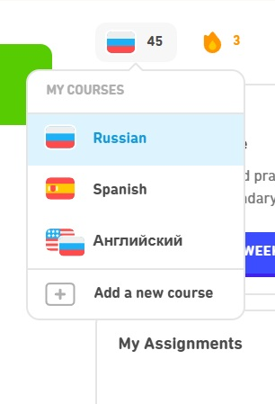
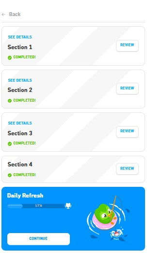
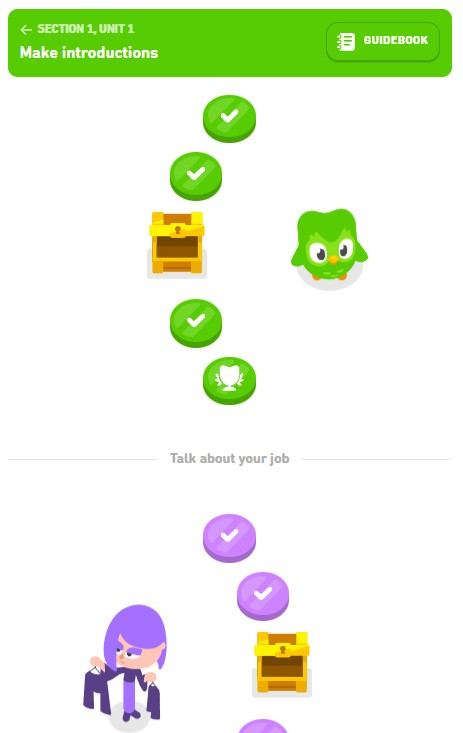

On this page
1) How Duolingo is organized
- Course -> Russian, Spanish, etc.
- Sections -> big parts of the course, Russian course has 4 sections
- Units -> each section is divided into units
- Lessons -> each unit contains lessons. They are short activities such as reading, listening, writing, and sometimes speaking. You complete lessons to earn points
Tip: If you don't see all content in the screenshots below, it is because Duolingo is showing only the completed lessons in each unit. That's normal.
Course Selection is on the main page under the icon that looks like a flag:
Sections. This image shows four sections in the Russian course. Completing a section unlocks the next one. Clicking "Review" shows the units in that section, and "See Details" lists the grammar concepts it covers.
Units and lessons. This shows the first two units in Section 1. Lessons look like stepping stones with a white checkmark inside. The trophy is a review, and reaching a chest rewards you with gems. Each unit has a "Guidebook" with key phrases for that unit.
2) Completing assignments and earning XP
When I assign work, you'll receive an email from Duolingo with the assignment link.
- Click the assignment link. You may need to sign in with Google if you haven't already. This will take you to the assigned lesson or review.
-
Earn the XP.Duolingo only lets me assign XP, but I can't control which lessons you do. Try to do at least the assigned XP. Your completion should be tracked automatically in Duolingo Classroom.
- Completing new lessons
- Reviewing lessons you already did
- Doing practice lessons
XP per lesson can vary, but many lessons are about ~10 XP.
3) Practicing to earn hearts
When you make a mistake, you lose a heart. Once you run out of hearts, the lesson is over and you must earn more hearts to continue progressing through the course. However, you can continue learning by practicing old material. This will not only allow you to earn hearts and XP, but also help you review and reinforce what you've learned.
- Practice to earn a heart (recommended)
- Paid options ("Super", "free trial", premium prompts)
- Close any upgrade prompts that appear
- Click on the heart icon in the upper right corner of the screen
- Choose "Practice to earn a heart"
4) Leaderboard
After you complete at least one assignment or lesson, you'll see our class' leaderboard in the right panel. Leaderboard resets every week, so you can start fresh and compete for the top spot each week. When you click on the leaderboard, you can see how many XP each student has earned that week.
5) How to ignore upgrade prompts and avoid excessive ads
- Unlimited hearts / fewer restrictions
- Fewer ads
6) Adjusting Notifications
You can turn off anything you find distracting in your account settings.